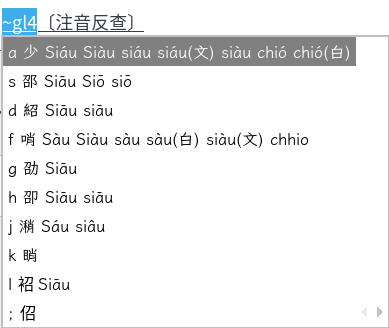

POJ/TL 都會通
不用先決定白話字或台羅。打 tsiah 或 chiah 都能找到「食」，適合不同拼音習慣的人一起用。
為電腦書寫台文設計
不用先決定白話字或台羅。打 tsiah 或 chiah 都能找到「食」，適合不同拼音習慣的人一起用。
先照口語直覺輸入，候選會列出可能聲調；需要精準時再補數字調，例如 ho2、tai5 uan5。
每個候選都顯示拼音註解，讓你在選字時確認讀音，也能慢慢建立自己的台文書寫習慣。
依 LKK 李江却用字規範，該用漢字的用漢字，該留羅馬字的留羅馬字，更貼近日常台文書寫。
主字典整合 ChhoeTaigi 9 本辭典與教育部 KipSutian 詞目，包含 iTaigi 華台對照典、台華線頂對照典、台日大辭典、Maryknoll 台英辭典、Embree 台英辭典、教育部台語辭典、甘字典等來源；教育部詞目保留原始漢字或漢羅候選，並補上 TL、POJ 全羅候選。候選排序再參考楊允言詞頻、iCorpus 新聞語料、康軒課本、900 例句、NMTL 文學語料、KipSutian 例句與白話字文獻。另納入建中的教育部臺灣台語輸入法詞庫增補檔案，補強政府機關、行政區、數字時間日期、常見人名、台/臺變體與 LKK 羅馬字詞。這些外部資源讓拍台文不是憑感覺排字，而是把台文社群多年累積變成可用的電腦輸入法。
建置流程可納入第三方人工整理的教育部輸入法增補 CSV，轉成可驗證的 Rime 詞條，並保留跳過列與重複列報告。
不確定哪一段拼音時，可以打 si?、s?ah、tsh? 這類模式查音節，再進一步選字。
用 ~ 從華語注音找字後，會把台語拼音送回主輸入流程，並在註解和全羅輸出中顯示調符。
從語料建立輕聲詞條，也在輸入時即時產生輕聲候選，保留 -- 標記，像「轉--來」「食--飽」這種用法不會被吃掉。
針對 oa、oe、ui、iu、nng、nn 轉 ⁿ 等細節反覆修正，避免輸出看起來不像真正的白話字或台羅。
◆ 標示推薦漢字，★ 標示推薦羅馬字，來源包含 LKK 漢羅規範與教育部推薦用字 700 字詞。
Tab 可進入 asdfghjkl; 選字，數字鍵保留給聲調；\ 可在漢羅和全羅間切換，輸出模式會記住。
scripts/ 資料工程
拍台文不是只手寫一份 Rime 字典。scripts/ 會下載 21 個語言資源，轉換 ChhoeTaigi CSV 與教育部 KipSutian ODS、抽取語料詞頻、建立華語反查、解析 LKK 與教育部推薦用字、產生輕聲詞條、匯入人工詞庫增補、擷取雙字詞組，最後再驗證 Rime 字典格式。
extract_ungian_freq.py
scripts/extract_ungian_freq.py 讀取 Ungian_2009_KIPsupin 專案中的 JSON 資料。這份資料來自楊允言老師提供的「教育部臺灣閩南語字詞頻調查工作」，內容是台語文作品整理成教育部台羅（KIP/TL）後的語料。腳本會解析 1,093 個 JSON 檔，抽出台羅行、切出詞 token，統計每個詞出現次數，也輸出句子給 bigram 詞組建置使用。
這很重要，因為輸入法不能只知道「有哪些字詞」，還要知道「哪些字詞在文章裡比較常出現」。有了文學與書面台語的詞頻，拍台文可以把常用詞排前面，減少選字，也讓漢羅文章、創作、教學和長文輸入更順。
21 個外部資源
搜尋：白話字輸入法 / 台羅輸入法 / 漢羅輸入
拍台文把 POJ 白話字和 TL 台羅放在同一套 Rime 方案裡，常見差異會自動對應。你可以照自己熟悉的方式打，也可以在輸出時切換漢羅 TL、漢羅 POJ、全羅 TL、全羅 POJ。
看 POJ/TL 對照tsiah png食飯chiah png食飯gua ai li我愛你goa ai li我愛你比較：意傳 / 教育部 / 信望愛 / 拍台文
台語輸入法不是只有一種需求。教育部適合查標準與手機輸入，信望愛是成熟的台語客語桌面輸入法，意傳累積了重要的台文 NLP 工具；拍台文則把開源辭典、語料詞頻、Rime 跨平台和低門檻安裝整合成一套電腦輸入體驗。
搜尋：意傳台語輸入法
意傳的臺灣言語工具、KeSi 和相關台文處理工具奠定了羅馬字轉換、文本正規化、斷詞與 NLP 基礎。拍台文延續這個開源方向，但產品焦點放在「裝好後每天打字」：Rime 方案、POJ/TL 混打、漢羅候選、注音反查、安裝包與跨平台部署。
搜尋：教育部台語輸入法
教育部的官方資源很適合查標準用字、台羅拼音和手機/平板輸入；既有漢字輸入法也以教育部臺羅和推薦用字為準。拍台文則主打桌機長文輸入：Windows、macOS、Linux 都可用，POJ/TL 不必分開，候選顯示拼音，數字鍵保留給聲調，選字用 Tab 加 asdfghjkl;。
搜尋：信望愛台語輸入法
信望愛台語客語輸入法提供 Windows/macOS 安裝程式，是很多台文使用者熟悉的老牌工具。拍台文選擇 Rime 生態，讓方案檔、Lua 模組、詞庫、安裝腳本和問題回報都能在 GitHub 上一起改，Linux 使用者也能用同一套方案。
搜尋：最好用的台語輸入法
打字時可以省聲調、POJ/TL 混打、看拼音註解、切換漢羅/全羅、用 ? 任意位置查字；背後用 220K+ 詞條和多語料庫詞頻把常用詞往前排。對創作者、老師、學生和社群小編來說，重點是少查字、少切換、少整理格式。
拍台文使用的辭典與語料來源包含 ChhoeTaigiDatabase、iCorpus 臺華平行新聞語料庫漢字臺羅版、楊允言老師 Ungian 2009 字詞頻調查資料、建中的教育部臺灣台語輸入法詞庫增補檔案、意傳臺灣言語工具、KeSi、教育部臺灣台語常用詞辭典與信望愛台語客語輸入法公開說明。

搜尋：華語查台語 / 台語讀音反查
按 ~ 進入注音反查，用華語字找到台語候選。這對剛開始寫台文、或臨時想不起某個詞讀音的人特別有用。
最近更新
這裡用使用者看得懂的方式整理近期變更；完整技術紀錄仍以 GitHub commit 與 Releases 為準。
候選本來已經在主字典內，但漢羅顯示規則會把多字詞裡的明確漢字誤改成羅馬字。現在像 水khok仔 會保留可選的 水觳仔 候選。
教育部 KipSutian ODS 會轉成可重建的 CSV，再匯入主輸入字典、反查字典、TL 全羅候選與 POJ 全羅候選；必要時也保留漢羅混用詞形。
build pipeline 可納入第三方人工整理的增補 CSV，補強政府機關、行政區、數字時間日期、常見人名、台/臺變體與 LKK 羅馬字詞。
GitHub Actions 產出的 Windows 安裝檔會使用正確 artifact 路徑，避免 release 流程找不到檔案或漏上傳。
專案可透過 CI 發佈跨平台安裝包，讓一般使用者從 Releases 下載，而不必手動複製 Rime 方案檔。
下載與安裝
拍台文不是另一個輸入法引擎，而是 Rime 的台語方案。Windows 使用小狼毫，macOS 使用鼠鬚管，Linux 使用 fcitx5-rime 或 ibus-rime。
PhahTaiBunSetup.exe。PhahTaiBun.pkg。git clone https://github.com/soanseng/rime-phah-taibun.git
cd rime-phah-taibun
./install.sh給 Claude / Codex
適合不熟 Rime 資料夾、終端機或重新部署流程的人。AI 會依你的系統走 Windows、macOS 或 Linux 安裝路徑。
請幫我在這台電腦安裝拍台文 rime-phah-taibun。請先確認我的作業系統與是否已安裝 Rime 核心：Windows 用小狼毫 Weasel，macOS 用鼠鬚管 Squirrel，Linux 用 fcitx5-rime 或 ibus-rime。若尚未安裝 Rime，請引導我先安裝官方 Rime 核心。
我已經下載或 clone 這個專案。請在專案根目錄執行適合我系統的安裝方式：
- Windows：執行 install_windows.ps1，保留既有 Rime 設定、自訂詞庫與 rime.lua。
- macOS：執行 scripts/install_macos.sh，必要時指定目前專案路徑。
- Linux：執行 ./install.sh，自動偵測 fcitx5-rime 或 ibus-rime。
請不要刪除或覆蓋我原本的其他 Rime 輸入方案。安裝後請協助我重新部署 Rime，確認系統輸入法已切到小狼毫／鼠鬚管後，按 F4 或 Ctrl+` 確認清單中有「拍台文(台)」，並測試輸入 gua beh khi tshit tho 是否能看到台語候選。常見問題
如果會講台語、知道大概怎麼拼，就可以開始。候選拼音註解、聲調省略和華語反查，都是為了降低入門門檻。
不是。拍台文主打電腦輸入法，支援 Windows、macOS、Linux，使用 Rime 作為輸入法核心。
安裝流程會保留既有 Rime 輸入法、自訂詞庫與 rime.lua，再加入拍台文方案。
不一樣。拍台文只把有用的詞庫資料納入建置流程；操作仍維持拍台文設計：數字鍵打聲調，候選選字按 Tab 後用 asdfghjkl;，符號選單按反引號。